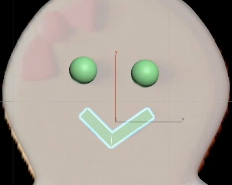

Для того чтобы пряники не бросались в глаза, их можно сделать временно прозрачными, для этого надо нажать Alt + X. Для полного удобства надо перейти в вид Top и режим Shaded.
Чтобы сделать платье нашего пряника, необходимо так же через Line нарисовать контур.
Если случайно снято выделение с лайна, то двойной клик по точке на лайне выделит ее заново. (Так как в 3D’s Max есть понятие слои, то один клик выделяет самый ближний к нам объект, двойной клик – чуть дальше и так далее).
В Modify – modifier list – extrude Amount – 0.5. Теперь надо поднять платье.
Применяется модификатор Quadify Mesh (~0.4%). Далее так же применяется TurboSmooth.
Декор пряника мальчика. В create – line (Corner).
Ставятся галочки на обоих пунктах и выбирается объем по прямоугольнику (checkpoint на rectangle).
Чем дальше ставятся точки, тем лучше будет выглядеть.
Для удобного редактирования надо нажать alt + X и в Modify – line – vertex. Теперь можно спокойно редактировать линию, если все устраивает - TurboSmooth (Iterations = 3).
Теперь надо так же поднять декор для этого в координате z = 3 мм. На платье девочки делается тоже самое.
Теперь надо сделать глаза – Cteate – Geometry – Sphere. Ее позиция по оси z= 3mm.
Используя Shift и инструмент Select&move – при перемещении используется тип Copy. Эти же сферы используются для глаз мальчика и его пуговок, а так же крепления платья у девочки. При необходимости можно изменить их размер.
Теперь будем делать рот наших пряников: в Create – Line (corner) с 3 точками.
Сглаживание делается через TurboSmoth (Iterations = 3).
Создание бабочки пряника.
Готовую сферу надо скопировать в нужную точку и изменить ее размер, так как середина бабочки больше, чем глаза пряничков.
Так же надо сделать крылья бабочки для этого в Create – Geometry – Box с размерами 2*2
После его создания, приподнимаем его на нужную нам высоту
Теперь переходим в Modify – Modifer list – Taper. Выбираем ось X и в параметрах Amount (сила сжатия) = 0,7. После этого в Box надо изменить высоту, чтобы он не был таким высоким и необходимо придать форму крыла бабочки. Далее TurboSmooth (Iterations ~2 ~3). Затем выделяется объект и нажимается Mirror.
Создается вторая часть наше бабочки.
Бабочка девочки
Нажимается Ctrl и выделяются объекты бабочки мальчика и на панели интерфейса Group – group – ok. Происходит группировка объектов, затем она копируется на девочку, с помощью клавиши E на клавиатуре, поворачивается по оси z на 45 градусов.
Для того чтобы изогнуть ее в Modify – Modifier list – Bend – помогает деформировать и изгибать объект по нужным осям. Ось Y - Angel = 80.
Нажимается "+" у Bend и выбирается Gizmo, затем с помощью инструмента Rotate (E) и поворачивается по оси Z ~ -45 градусов.
Кружка
Create – Shapes – Line (Corner)s выключаются галочки в Rendering – Enable in Renderer и Enable in Viewport и рисуется контур нашей кружки и доходя до дна кружки нажимается Shift (для создания ровной линии) и ведется примерно до середины.
Далее переходим в Modify – line – vertex выделяем vertex на боковой границе и ставим тип Smooth подгоняя ее положение под референс. Теперь выделяем нижнюю точку и переходим в Modify – Modifier list – Lathe, включив этот модификатор проверяем все ли хорошо получилось.
Ставитсям галочка на Weld Core (сшивает точки в одну)
Поверх Lathe применяетс модификатор Shell и параметры подгоняются под референс. Теперь надо сгладить его – TorboSmooth с галочкой на Smoothing groups и Iterations = 3, для того чтобы нижняя часть была не острой применяется еще раз Turbosmooth Iterations = 1 без галочки Smoothing groups.
Конфета
Create – Geometry – Cylinder и рисуется цилиндр с радиусом = 2,29 и высота 65 и поворачивается по оси X = -90, выделяется цилиндр и ставится на место где он должен быть.
Теперь надо закрутить цилиндр Modify – Modifier list – Twist Angel = 720, затем накладывается Bend и ставится угол поворота 180 по оси z и Limits, после чего сглаживаем нашу конфету.

Композиция сцены
Нажимается W и выбирается референс и удаляется. Затем группируются каждый объект ( в итоге получаются группы: Пряник девочка и пряник мальчик), так же при необходимости можно открыть группу – Group – Open group.
Выделяются все объекты и поворачиваются по оси Х на 90 градусов.
Нажимается F (Front) и размещаются на основной линии.
И располагаются объекты (удобнее на виде Top). В итоге выходит:
Теперь надо сделать подложку, на которой будет стоять композиция, и фон. Для этого ставится Plane (1000*1000). Фон – Create -Box с количеством сегментов 1*1 и размерами 100*1500*1500.
Чтобы уравновесить композицию слева надо скопировать пряничка и повернуть его в 0*0*0 и расположить на сцене.